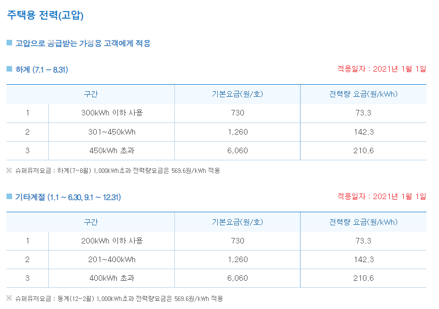

후기
11월 27일부터 12월 1일 5일 동안 우리 집에서 쓰는 전력량을 줄여보고자 노력했다. 그 결과로 하루 평균 3,355W 총 16,775W를 사용하였고 하루 평균 약 880W의 소비전력을 줄였다. 만약 절약하지 않고 첫날처럼 5,534W의 전력을 5일 동안 계속 사용하였다면 5일동안 27,670W 사용했을 것이다. 절약을 통해 평소에 쓰던 전력에 거의 2배 정도를 줄였다.
이렇게 절약하고 나니 전기 요금이 얼마인지 궁금해졌다. 그래서 한국전력공사(KEPCO)에서 게시한 한글 전기요금 표를 참고하여 전기 요금을 계산해 보았다. 결과는 아래와 같다.
전기 요금
주택의 전기 요금은 저압과 고압에 따라 달라진다. 우리 집은 고압이므로 아래의 표를 보면 된다.
(전기요금표)
표를 보면 계절에 따라 또 나뉘는데 내가 기록한 날은 기타 계절(9.1~12.31)에 해당된다.
나는 총 16,775W를 사용했으므로 계산해보면
16.775(kWh)*73.3(원) = 1,229.6075(원)
생각보다 적은 양이 나왔다.
그렇다면 절약하지 않고 27,670W를 사용했다면 얼마가 나올까?
27.670(kWh)*73.3(원) = 2,028.211(원)
생각보다 별로(798.6035원 정도) 차이 안 나지만 들인 노력에 비해 이 정도면 괜찮은 거 같다.
보고서를 마치며
국어 수행평가로 시작한 프로젝트인데 전기를 절약하는 것이 어렵지도 않고 돈도 절약할 수 있어서 좋은 것 같다. 평소에 아빠가 안 쓰는 불은 꺼라고 잔소리를 많이 하시는데 이번 기회로 안쓰는 불을 많이 끈 것 같다. 앞으로도 계속 절약을 해서 소량이지만 돈도 아끼고 아빠의 잔소리도 안 들을 것이다.
출처 및 래퍼런스
이미지
전구:아이콘 제작자 Freepik from www.flaticon.com
지구:아이콘 제작자 Good Ware from www.flaticon.com
노트:Icons made by Freepik from www.flaticon.com
전력
전력 개념:생활코딩-egoing 전기1
전기요금:
한국전력공사(KEPCO)
사이트 디자인
테마 컬러 & nav영역:Opentutorials.org
사이트 파일
주의! 사이트 다운로드시 모든 파일이 같은 폴더(디렉토리)에 있어야 정상작동함.
구글드라이브Github
사이트 파일 다운로드